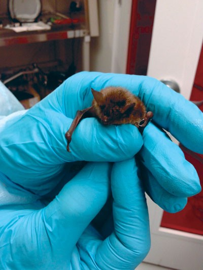
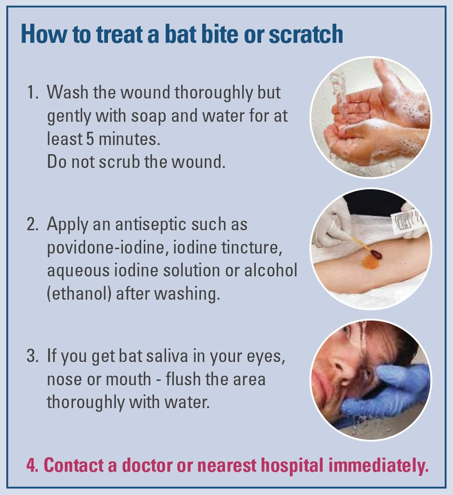

Bat Safety Guide
How to Handle a Bat Safely
When handling a bat, always wear thick gloves and avoid direct contact with your skin. Bats can carry diseases like rabies, so it’s crucial to minimize exposure.
Use a towel or cloth to gently pick up the bat, and place it in a secure container (e.g., a box with air holes) to transport it safely.
How to Handle a Bat Safely
Important Safety Measures
Avoid trying to catch or handle a bat if you are untrained. If you find a bat indoors, close all interior doors and open windows to allow it to fly out safely.
If the bat does not leave on its own, contact local wildlife professionals for assistance.
Releasing a Bat Safely

How to Treat a Bat Bite or Scratch
If bitten or scratched by a bat, wash the wound immediately with soap and water, apply an antiseptic like Neosporin, and seek medical attention immediately to assess rabies exposure risks.
Inform the healthcare provider about the bat interaction to receive appropriate post-exposure treatment if necessary.
Treating a Bat Bite
